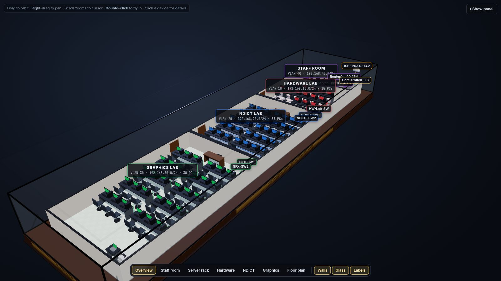
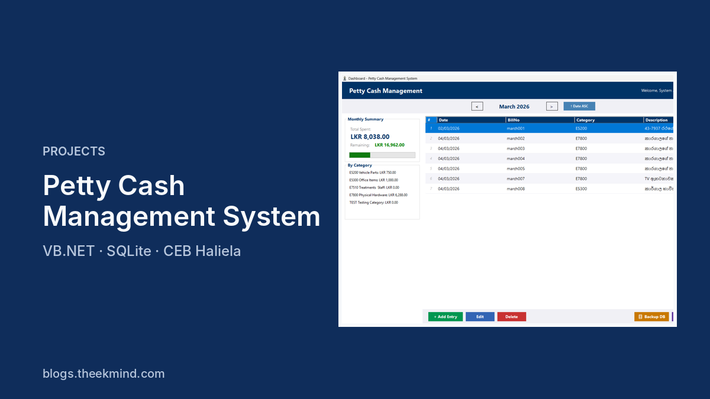
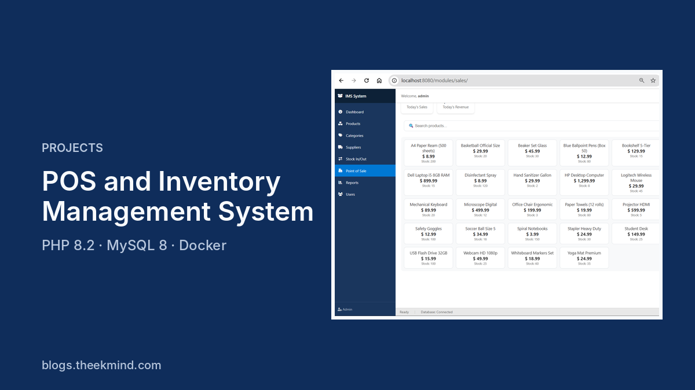
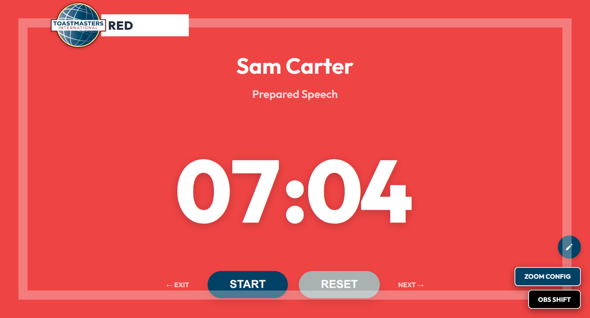

Toastmasters Timer
A live meeting timer for the club Timer: full-screen colour cards, a speaker roster and a print-ready A4 report. Used at real club meetings, with accounts and a GitHub Actions deploy.
I'm an ICT learner and builder from Sri Lanka. I build practical systems, fix them properly, and write down what I learn so you can use it too.
NDICT (NVQ Level 5) graduate, studying BIT at UCSC.
I designed a campus lab network in Cisco Packet Tracer, then built it as a 3D model you can orbit, zoom and click. See the VLANs, the Layer 3 core, the server room and live DHCP, routed and NAT traffic.

Things I built for real users and for my studies. Each has a case study with the problem, the approach and the result.
A live meeting timer for the club Timer: full-screen colour cards, a speaker roster and a print-ready A4 report. Used at real club meetings, with accounts and a GitHub Actions deploy.

A desktop app for the Ceylon Electricity Board, Haliela branch, replacing a manual ledger. Business-rule engine, 22+ permissions, audit log, Sinhala and English reports.

A supermarket point of sale and stock system with three roles, receipts and reports. Runs with one docker-compose up.
The tools I've actually used in the projects above.
Good engineers explain their work. I work on that in the Voice Your Dream Toastmasters Club, where I practise public speaking and design the club's marketing.
I also built the club's meeting timer, a web app the Timer runs on the projector, and I write about what I learn on the blog.

Clear, practical notes on networking, development, Linux and learning.